포클랜드 전쟁 잡담 (10/21)
게시: 2021-10-21T06:30:03+09:00
<고철상들의 습격>
1982년 3월 19일, 일단의 아르헨티나 고철상들이 포클랜드 섬 동쪽 1400km 지점의 작은 영국령 South Georgia (사진1) 섬에 상륙하여 아르헨티나 깃발을 올리고 그 섬이 아르헨티나 영토라고 주장하며 소란을 피움. 영국은 쇄빙선 HMS Endurance (사진2)에 포클랜드 주둔 해병대 21명을 태워 보내 이들을 쫓아냄. 몇 주 뒤인 4월 2일, 아르헨티나가 포클랜드 섬을 침공.
** 중국의 대만 침공이나 일본의 독도 침공이나 이런 식으로 민간인들이 사전에 동원되어 꼬투리를 만들 가능성이 많음.
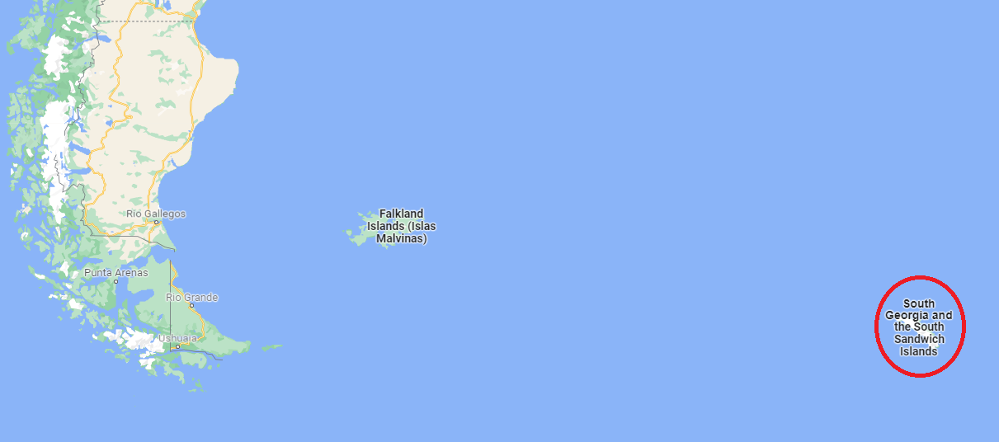 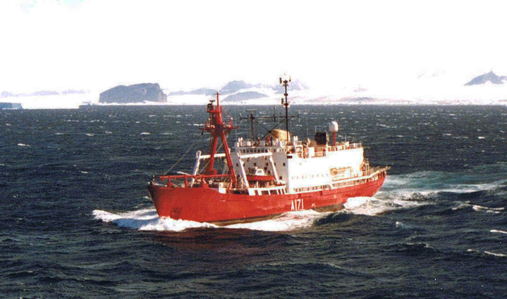
<최초의 영국 제트폭격기, 영국군을 덮치다> English Electric Canberra는 WW2 당시 목재로 만든 고속 폭격기로 유명한 de Havilland Mosquito의 후속작으로 1940년대에 개발을 시작, 1951년에 실전 배치된 영국 최초의 제트 폭격기. 1950년대 전세계에서 가장 높은 고도를 날 수 있는 항공기였고 세계 최초로 대서양을 논스톱 횡단한 제트기이기도 함. 성능이 너무 좋아 미공군조차 B-57라는 모델로 라이센스 생산. 무려 55년간 현역 생활한 뒤 2006년 영국 공군에서 퇴역. 아직 NASA에서 고공 관측용으로 3대를 현역으로 사용 중. 그런데 1982년 포클랜드 전쟁 당시 아르헨 공군의 캔버라 폭격기 8대가 동원됨. 아무리 우수한 폭격기라도 30년 전 기술로 만들어진 것이라 아르헨 측에서도 주로 지상군에 대해 야간 폭격 용도로만 사용. 그 와중에도 결국 1대는 해리어의 사이드와인더에, 1대는 영국 구축함의 Sea Dart 대공 미쓸에 맞아 격추됨.
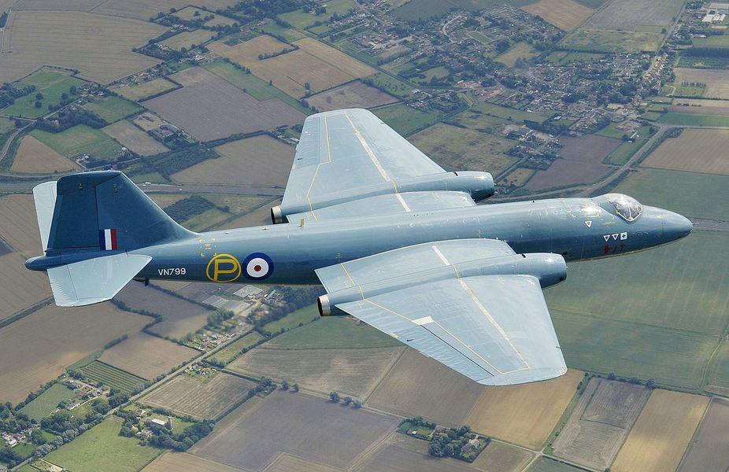 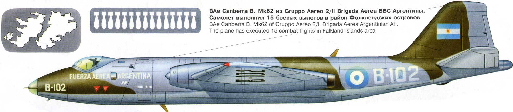
<도우넛 덕분에 폭격을 면하다> 포클랜드 전쟁 당시 영국은 아르헨티나 군부의 거의 모든 암호화된 무선통신을 도청. 덕분에 엑조세 미사일을 다 소진한 아르헨티나가 베네주엘라와 파라과이 등에서 공중발사 엑조세 미사일을 긴급히 사오려고 흥정 중이라는 것을 인근 해저를 어슬렁거리던 잠수함 HMS Conqueror의 장교들까지 다 알고 있었음. 이런 도청은 영국 군함들과 Nimrod 전자전 항공기, 그리고 6500km 떨어진 적도 인근의 아센시온 섬의 영국군 기지에서 이루어졌음. 여기서 수집된 암호문은 모두 영국 남서부 첼트넘(Cheltenham)에 있는 정부통신사령부(GCHQ, 속칭 Doughnut, 사진1)에서 해독한 뒤 포클랜드 현지의 영국군에게 전달됨. 전쟁 내내 포클랜드 현지의 아르헨티나군 사령부는 한번도 폭격을 당하지 않았는데 그 이유는 얘들이 폭격당해서 죽어버리면 아르헨티나 본국에서 오는 암호문이 끊기기 때문에 영국군이 일부러 폭격하지 않았던 것.
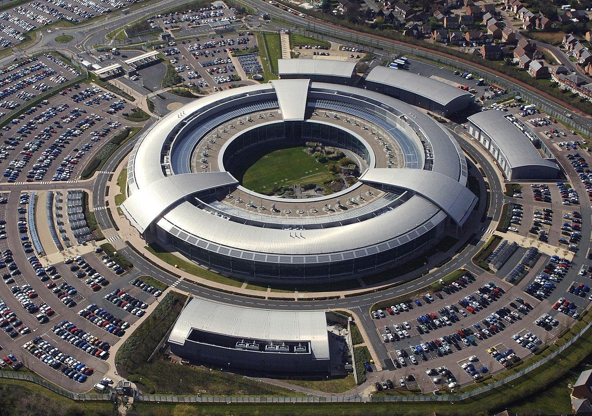
<바보야, 문제는 정찰이야> 포클랜드 전쟁 당시 영국해군도 조기경보기(AEW)가 없어서 반쯤 장님 상태였으나 아르헨티나 측도 만만치 않은 근시안. 그나마 아르헨 측에게는 1947년 미해군이 최초 도입했던 대잠전(ASW) 항공기인 Lockheed P-2 Neptune 2대가 남아있어서 이걸로 영국 해군을 탐지. 5월 4일 HMS Sheffield를 격침시킨 아르헨의 Super Etendard도 넵튠의 유도를 받아서 공격했던 것. 아르헨 해군 순양함 ARA Belgrano를 격침시킨 영국 핵잠수함 HMS Conqueror도 잠망경과 안테나를 내밀고 항해하다가 이 대잠기에게 걸릴 뻔 한 적이 있었으나, 넵튠이 나타나기 5분 전에 '그 쪽으로 넵튠 날아간다'는 지휘부의 무전을 받고 황급히 잠수하여 살았다고. 실제로 컹커러에서는 잠망경으로 이 넵튠을 보았고, 따라서 당연히 넵튠도 컹커러의 잠망경을 확인했을 것 같다는데 실제로는 봤는지 못봤는지 아무튼 넵튠은 공격하지 않고 지나감. 이렇게 중요한 역할을 하던 넵튠 2대는 포클랜드 전쟁이 끝나기도 전에 부품 부족으로 비행 불능 상태가 되었고, 이후 아르헨 측에서는 C-130 수송기를 띄워 눈으로 영국 함대를 찾았다고...
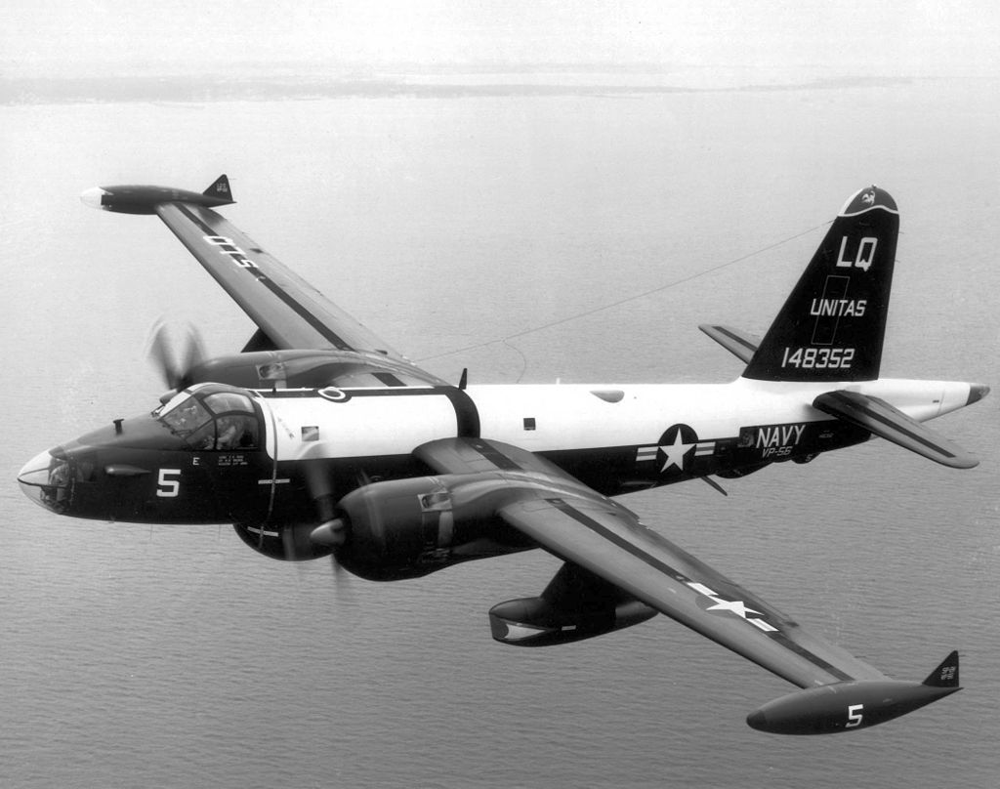
<유도어뢰? 필요없다그래> 포클랜드 전쟁 당시 벨그라노를 격침할 때 핵잠수함 HMS Conqueror는 3발의 Mark VIII 어뢰를 발사. 이건 1927년에 개발되어 WW2에서 쓰이던 구식 어뢰이지만, 당시 개발된 유도 어뢰인 Mark24 Tigerfish(사진1)의 신뢰성이 너무 떨어져서 Wreford-Brown 함장은 구식 어뢰를 대신 쏜 것. (전쟁 전에 훈련 발사를 할 때 음향 유도인 Tigerfish 어뢰는 소음을 쫓아 180도 회전하여 컨커러를 명중시킬 뻔 했다고...) 이렇게 발사된 멍텅구리 어뢰 3발 중 2발이 벨그라노의 이물과 고물을 명중시켰는데, 이게 기가 막히게 잘 맞음. WW2 시절 순양함답게 벨그라노는 함체 중앙부에 장갑판과 대어뢰 방호구역 (internal anti-torpedo bulge)이 있었는데, 두 발 모두 아슬아슬하게 그것들을 빗겨나가 아무런 보호가 없는 선수와 선미를 때림. 이렇게 급소를 맞은 벨그라노는 그대로 격침. 심지어 빗나간 어뢰 1발도 벨그라노를 호위하던 구축함 Hipólito Bouchard (D-26, 사진2)에 명중. 그러나 역시 너무 오래된 어뢰라서 그랬는지 다행히(?) 폭발하지는 않음. 나중에 컨커러가 이뽈리뜨 부샤르의 무선을 도청해보니, '폭풍으로 인한 손상'을 수리하러 귀항하겠다는 무선을 날림. 그러나 그 며칠간 폭풍은 전혀 없었음. 알고보니 44노트(약 81km/h) 속도로 달려간 Mk VIII 어뢰가 (폭발하지는 않았어도) 얇은 구축함 함체에 4개의 금간 곳을 만들었다고.
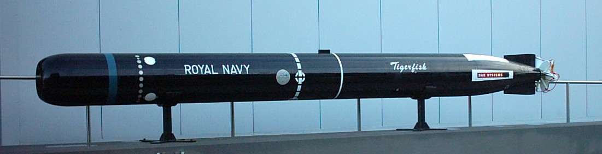 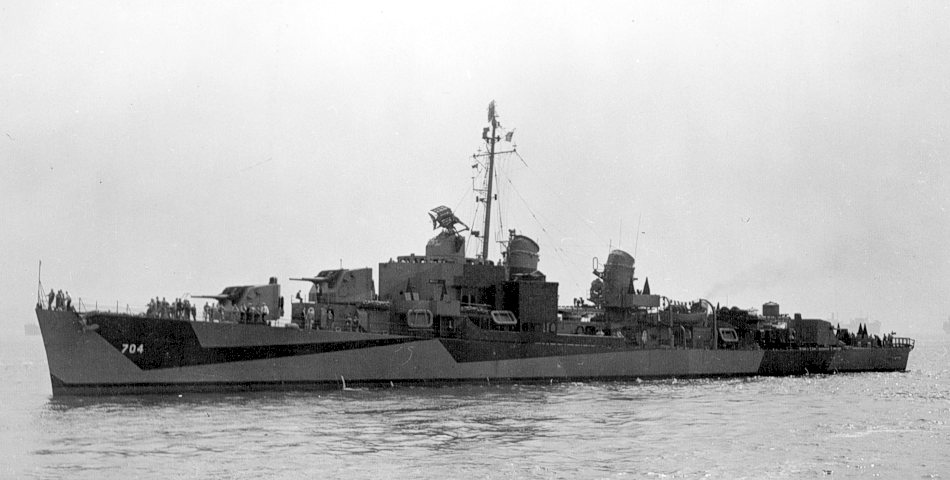
<잠수함과 헬기들의 개싸움> 포클랜드 최초의 해전은 잠수함 vs. 헬기. 1982년 4월 25일, 영국 구축함 HMS Antrim에서 날아오른 대잠헬기(Wessex, 사진1)가 레이더로 사우스 조지아 섬 근처에서 아르헨티나 잠수함 Santa Fe (사진2)을 탐지. 1944년 진수되어 WW2와 한국전에도 참전했던 미해군 잠수함 USS Catfish를 사들여 개명한 낡은 잠수함이었던 산타페는 이 섬에 일단의 해병대와 보급품을 내려다주고 돌아가는 길이었음. 기습을 당한 산타페는 웨섹스가 투하한 폭뢰에 손상을 입고 잠수를 할 수 없는 상태가 되어버림. 다른 구축함에서 날아온 헬기가 어뢰를 발사했는데 불발. 이 헬기들은 어쩔 수 없이 7.62mm 기관총을 쏘아대며 교전. 아르헨 잠수함 대원들도 소총과 기관총, 심지어 (왜 그런게 잠수함에 있었는지 모르겠으나) 스웨덴제 구식 Bantam 대전차 미사일 (사진3)까지 동원해서 헬기들과 싸움. 그러나 역시 그런 개싸움으로는 결판이 나지 않았고 다른 구축함에서 날아온 Wasp 헬기들이 AS.12 대함 미사일을 여러발 명중시킴. 그런 상황에서도 결국 산타페는 사우스 조지아 섬 부두에 도착하여 거의 좌초하듯 정박. 산타페는 어떻게든 아르헨 해병대가 있는 이 섬에 오면 해병대가 저 헬기들을 쫓아내 줄 것을 기대했는지 모르겠으나, 아르헨 해병대는 '잠수함도 당했는데 우리가 뭘 어쩌라고'라며 얌체같이 이 기회에 그냥 항복. 결국 산타페도 항복. 알뜰살뜰 했던 영국 해군은 전쟁이 끝난 뒤 노획물로 이 산타페를 끌고 가볼까 생각했으나 수리 비용이 더 많이 들 판이라 결국 3년 뒤인 1985년 먼바다로 끌고나가 자침시킴.
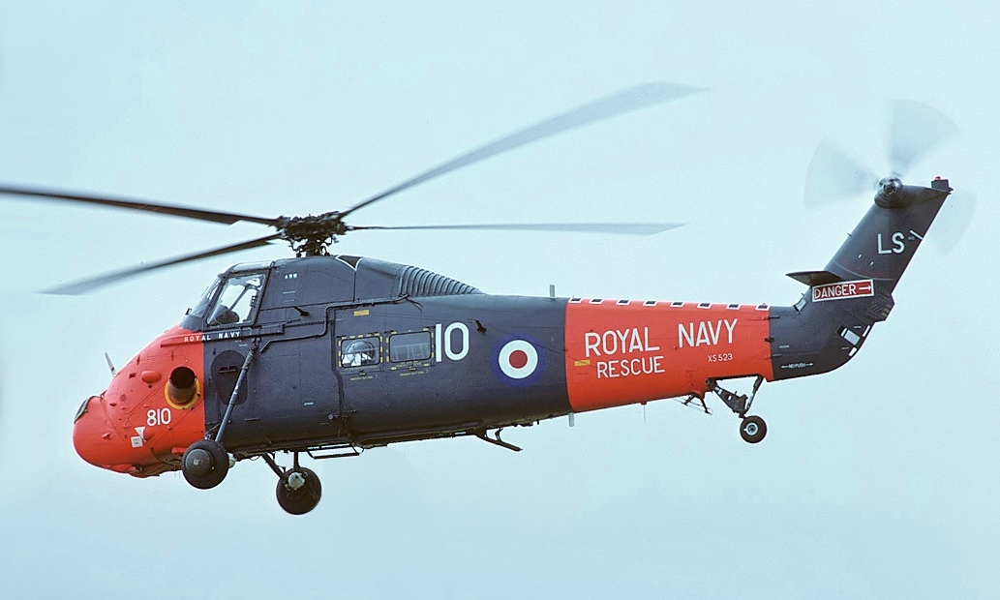 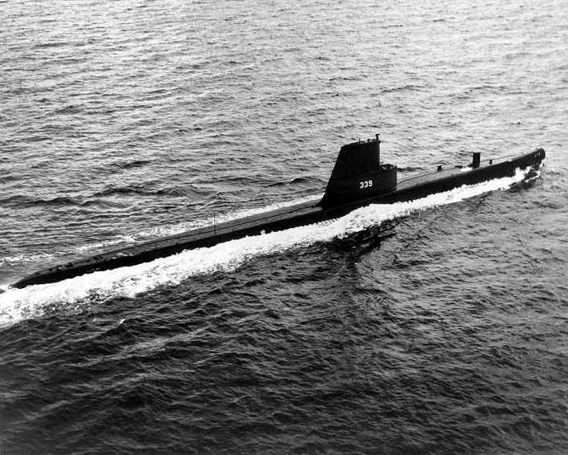 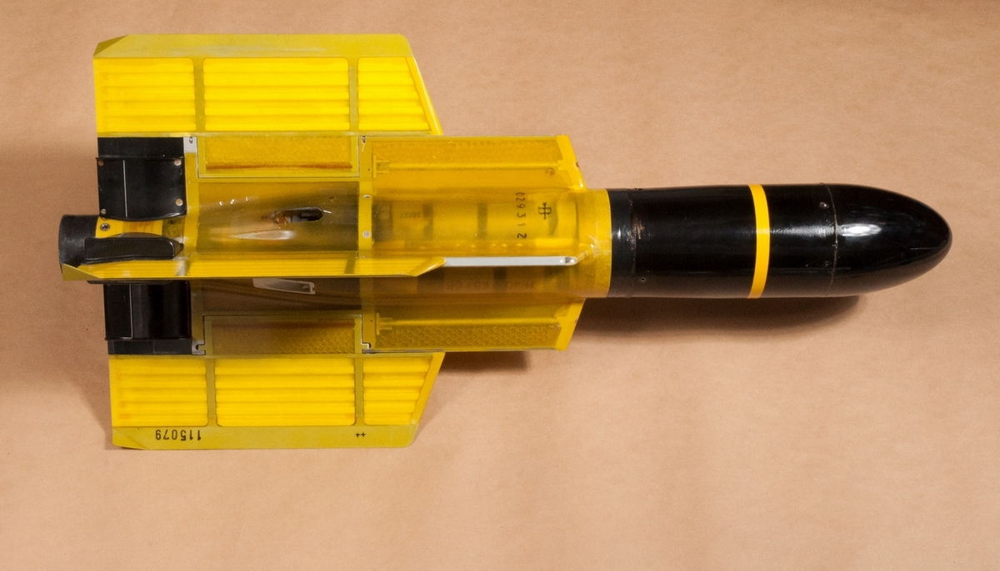
<디젤 잠수함이라고 우습게 보지 말라> ** 이건 포클랜드 이야기 아님 미해군 구축함 출신 어떤 양키 아재의 포스팅을 봤는데, 70년대 대서양 모지점에서 쏘련 Kilo급 잠수함과 조우. 3척의 미해군 구축함이 신이 나서 소나 핑 쏘며 나오라고 아우성. 근데 안 나옴. 지까짓것들이 원잠도 아니니 숨이 막히면 나오겠지 싶어서 마냥 기다렸는데 그래도 안 나옴. 근데 며칠 흐르니 구축함들이 연료가 떨어져서 하나 둘씩 항구로 돌아감. 결국 그 양키 아재가 탄 구축함이 5일만에 잠수함과의 대치를 포기하고 돌아가면서 승부는 쏘련 Kilo급의 승리로 끝남. 나중에 모항으로 돌아와서 알아보니 Kilo급만 해도 4주간 잠항이 가능하다고. ** Kilo급의 러시아 이름은 Па́лтус (빨뚜스). 넙치라는 뜻.
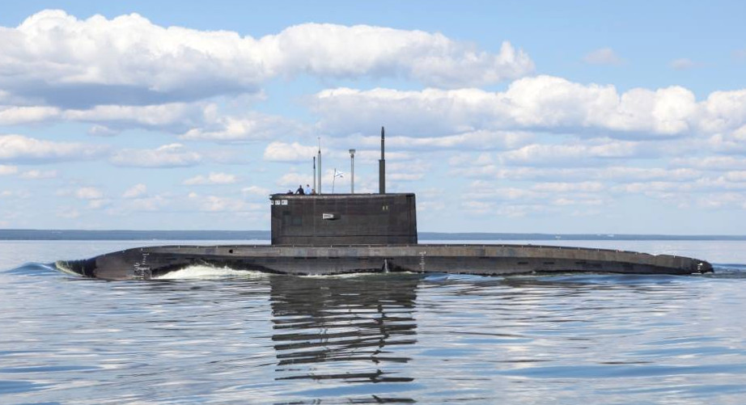
<잠수함이 영화 속에 나오는 것처럼 물 밖으로 뛰어날아오를까> ** 이건 포클랜드 이야기 아님 못하는 것이 아니라 안 하는거. 사진은 1952년 하와이 근해에서 테스트 중인 디젤 전기 잠수함 USS Pickerel (SS-524, 2400톤). 저때 부상 각도는 48도. 수심 약 45m에서 솟구쳐 오른 것이라고. 저때 저렇게 오버를 한 이유는 이왕 테스트하는 김에 그 이전까지의 기록이었던 USS Amberjack의 43도 기록을 깨고 싶어서.
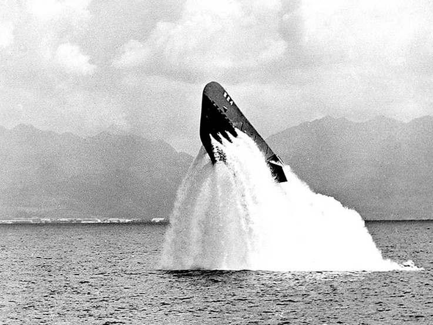